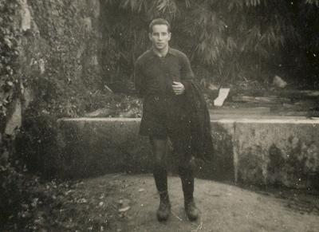

ASSOCIACAO ACADEMICA DE COIMBRA CLUBE DOS ESTUDANTES, DESDE 1887
A associacao academica de coimbra (sigla AAC), fundada a 3 de Novembro de 1897, a mais antiga associacao de estudantes de Portugal. Representa cerca de 25434 estudantes da Universidade de Coimbra, sendo estes automaticamente considerados seus socios quando se encontram inscritos na universidade com mais historia em Portugal
